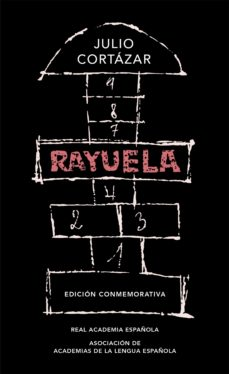

Rayuela

- Datos del libro
-
Autor: Julio Cortázar
País: Argentina
Género: Realismo Mágico
Fecha de publicación: 1963
Detalles sobre la obra
Rayuela es la segunda novela del escritor argentino Julio Cortázar. Escrita en París y publicada por primera vez el 28 de junio de 1963, constituye una de las obras centrales del boom latinoamericano y de la literatura en español.
Narra la historia de Horacio Oliveira, su protagonista, y su relación con la Maga
. La
historia
pone en juego la subjetividad del lector y tiene múltiples finales. A esta obra suele llamársela
antinovela
, aunque el mismo Cortázar prefería denominarla contranovela
. Significó un
salto
al
vacío que lo distanció de la seguridad controlada de los cuentos fantásticos de su primera época
como escritor para adentrarse en una búsqueda sin hallazgos a través de preguntas sin respuesta.
Si bien el estilo que se mantiene a lo largo de la novela es muy variado, según el propio Cortázar
la obra de alguna manera es la experiencia de toda una vida y la tentativa de llevarla a la
escritura